吸血鬼伯爵
枯骨与怨恨组成黑暗的洪流。
编织出永不散去的恐怖。
冤魂用无尽绝望的撕喊与呻吟，
伴奏出邪恶的交响曲。
当腐朽与死亡的气息笼罩整个大地，
我将用生命的鲜血铺平不死大军前进的道路！
当吸血鬼领主的大军步入战争之时，整个世界为之颤动。不死亡灵是整个世界中最危险的生物。在不死领主的意志控制下，他们成为堕落而又强大的敌人。你无法与它们理论，无法贿赂它们，甚至是威胁也无济于事。它们无所畏惧，毫无怜悯。它们不需要温暖，也不用喝水之类的生计之事。当它们前进的时候，整个军列充斥着它们以前敌人的尸体和囚魂。它们唯一惧怕的只有对它们造成伤害的阳光，它灼烧着不死生物污秽的肉体，并能够真正的毁灭这些超自然生物。但这对他们的敌人并没有任何帮助，当吸血鬼伯爵的大军进入战场前，这些不死的领主会用他们死灵法力召唤出翻滚奔腾的暴风乌云，来保护他们的仆从们免受阳光的侵害。行尸出现，黑暗来临。
吸血鬼伯爵的军团同古墓王并称WH世界两大不死亡灵的势力。他们与所有有生命的种族完全异同，不死军队全部散发着令人胆战心惊的恐惧气息，任何与之交锋部队的士气都可能瞬间崩溃。而本篇介绍的主题种族，是完全建立在吸血鬼家族统治基础上的，吸血鬼即是最高的统帅与将领，支配着所有亡灵奴仆。而其充满魅力的“家族式设定”更是吸引了无数玩家投身到这方邪恶的势力。需要注意的是：各个家族的吸血鬼拥有的特点与特殊能力各不相同，有的擅长近战，有的擅长魔法也有能力平衡的家族。而每次玩家只能选择一个家族作为统帅出征。所以选择吸血鬼的种类，成为整场战斗战术调整的一个重要环节。但如果不死军队的将军被杀，所有部队都将慢慢化为尘土。
五大吸血鬼家族的简介
在Old World世界里总共有5种吸血鬼。Lahmians是最古老的吸血鬼家族，也是最先发现永生的秘诀的。这些独自尊大的女性吸血鬼有着比任何生物迅捷的速度，再有就是她们无尽的魅力能够让那些愚蠢的战士放松警惕，将他们带入毁灭。 
Von Castein家族是最强大的家族，同时也是在Old World历史上占有重要地位的家族。在帝国东面的Sylvania，Von Carstein的大军以迅猛之师，攻占了人类的领土，并且等待合适的时机，进一步征服整个帝国。
Von Castein家族的能力属于平均型，近战与魔法都比较擅长。

Blood Dragon血统来自Lahmia最古老的Nhekharan帝国—伟大的战士之国。武技这一传统延续至今，这些吸血鬼骑士在战场上表现出的独一无二的战斗技巧令他们的对手为之胆寒。
（夜风：看看这些家伙的属性吧，近战技巧居然达到了顶级的“10”！除了卡傲斯四大恶魔之一的血魔，似乎6版WH没有再出现拥有这个数值的部队了...）
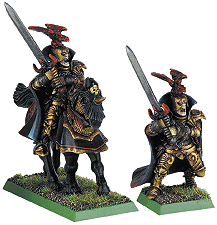
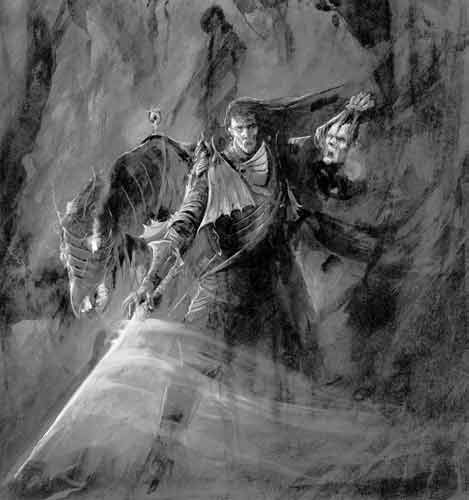
Necrarch血统中所有成员的有生之年都是短暂的。这些疯狂的吸血鬼都是死灵术的大师，并渴望着结束这个世界上所有的生命。
Necrarch家族的吸血鬼是擅长使用黑暗与死亡魔法的大师。

Strigoi是所有血统里最类似人类的。他们被称为“食尸鬼王”。这些吸血鬼长久以来被他的同族所排斥，被迫像清道夫一样的生存着。紧接着，他们的兽行暴露无疑而且伪装成人类。就像所有吸血鬼一样，他们令整个世界恐惧而闭口不谈。


下面是具体的军队介绍
不死生物全部拥有心灵免疫、引发恐惧等特性，与任何不死生物（哪怕是最基本的骷髅兵）战斗，每回合都需要做领导力测试，不通过就会全军溃逃。
但这个种族的兵种并不全是亡灵，比如狼、蝙蝠与食尸鬼就不属于不死类。
骷髅 （Skeleton Warriors Regiment）
Old World的所有战场遍布着那些无名战士的坟墓,这里成为他们的安息之地,或是尸横遍野的荒野。这些战士就算在死后也无法得到安宁，他们被黑暗魔法召回世间。这些已死去的战士们只残留下了生前战斗的记忆碎片，唯一剩下的是对战斗的无尽渴望和象服侍生前主人那样的服从他们的召唤之主。一个凡人也许敢于与骷髅大军交战，也有勇气直视一个丑恶的幽灵，但是在那些古老战士的尸骸蹒跚逼近时，他仍不会感到恐惧吗？
僵尸 （Zombie Regiment）
僵尸是由邪恶的死灵术士从死亡世界召回的尸体。死灵之主将成千上万的僵尸带入战斗之中，用它们来耗尽敌人的精力。它们不是训练有素的战士，但它们永不知退缩，并以它们庞大的数量吞没他们的敌人。它们那腐败的肉体散发着恶臭，肉蛆在其身体中蠕动，残破的皮肤一条条的无力的挂在身上，让人可以清楚的看见他们毫无生息的心脏和那不再涌动的血脉。腐烂的眼中透出憎恶的延伸，在对所有生者的杀戮和享用的驱使下，他们聚集到了一起。一些僵尸已经腐烂的所剩无几，和骷髅相比毫无区别，这使得他们与那些刚死去不久的相比更让人感到恐惧异常。
（夜风：僵尸的行动力可说是笨拙与缓慢之最，他们永远最后一个行动，除非敌人也是僵尸，如果说最大的优点就是...“便宜”。另外，全世界模型狂热者最爱干的事情，就是把各个种族的模型改造成各式各样的“僵尸”...）
恐怖之狼（Dire Wolves）
在Sylvania的土地之上四处可以发现巨狼的足迹。它们每逢冬季便离开World Edge山山上的洞穴中，四处毁坏人类村庄。帝国的人们毫不仁慈的灭杀这些野兽，但这不会永远有效。甚至从遥远的墓地中，这些恐怖的生物再度返回人间来惊扰人们。这些狼的躯体被掩埋在巨大的地穴中，但是在Sylvania着被诅咒的土地上，他们永远无法得到真正的安宁。他们再次从腐朽的泥土中破土而出，继续猎食。这些不死的狼群成为吸血鬼的狩猎小队。他们盘踞在吸血鬼领主的城堡周围，跟随着不死王子四处征战。恐怖狼有着枯骨般的头，皮毛已经腐坏变黑。他们眼中闪动着灵异的亮光。一旦被杀，它们的尸体将灰飞湮灭。
那些生前曾经领导群狼的最强大的狼被称之为毁灭之狼。它们被吸血鬼们以特别的召唤仪式复活，带领它们生前的狼群为吸血鬼进行永无至尽的杀戮和黑暗恐怖的统治。
食尸鬼（Ghouls）
当贫瘠的年代降临Old World时，在Sylvania的荒蛮的村落便出现了分食尸体。这些食人死人肉者变的越来越疯狂，并随着时间的流逝，渐渐的退化成了另一个新的种族，不在属于人类的种族。对于人肉的渴望使得他们经常出没于墓地四周，挖出那些刚刚掩埋不久的尸体，疯狂的殄食着冰冷的肉体。食尸鬼是一种佝偻着身体的另人厌恶的生物，他们污秽的皮肤上长满斑迹，他们的眼神透出兽性，他们锋利的牙齿从纱线缠结的嘴中突显出来。当不死的军队集结时，他们从藏身之地蜂拥而至，加入其中。吸血鬼和死灵法师是他们的主人，他们出于对主人愤怒的畏惧而完全服从他们。
（夜风：Ghouls在wh中居然属于“活人”...不过我觉得这帮只吃尸体的家伙与真正的“鬼”也相差无几了...）
不死族特殊部队
尸妖（荒坟守卫和黑骑士）
尸妖是被魔法召回世间的死去的战士。在以前的时代，Old World的人们把死者埋葬在用泥土和石块堆砌而成的坟冢下，用他们生前的武器和全部财富作为陪葬。虽然他们的肉体已经腐朽，尸妖借由邪恶魔法力量创造而生，并使他们可以一直持续数个世纪。他们身着青铜和黑铁打造而成的古老铠甲，处处显露出被岁月锈蚀和风化的痕迹。他们手持 印刻着邪恶符文，被诅咒的，卑劣的，而又曾经无比强大的魔法利刃。吸血鬼统治着整个尸妖军队，曾经敢于与他们挑战的人们如今已成为他们忠实的不死仆人。尸妖的军阵通常由一名来自陵墓中的古老的国王作为尸妖领主来统领他们。
荒坟守卫(Grave Guard)
不死族的精英与主力部队。
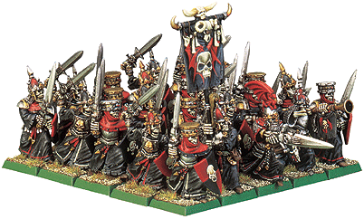
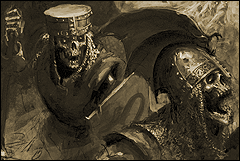
黑骑士（Black Knights）
骑乘着骨马的荒坟战士，不死族的骑兵部队。
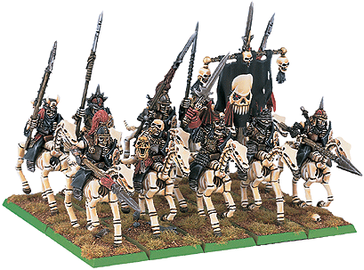
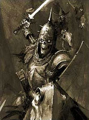
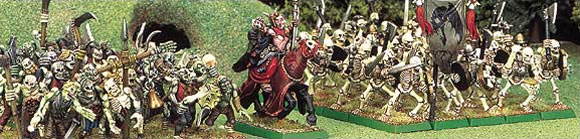
幽灵群 (Spirit Host)
在Old World世界里死者是不容易得到安宁的。死去的人们的幽灵、幽影和鬼魂重返并侵扰生者的世界。在特定的夜晚，可以看到这些迷失的灵魂在他们死去的上空盘旋，身上发出幽幽的冥光。
鲜有人知那些可以将他们结合的神秘祭礼，但是一些吸血鬼和多数痴狂的死灵法师仍然保存着这些知识。他们可以召唤并释放这些神秘的生物来对付他们的敌人。幽灵在被召唤时集结在一起形成了幽灵群，虽然它们无声无影的出现在战场上，但却是更为恐怖的，因为他们的碰触足以使凡人的心灵冻结。
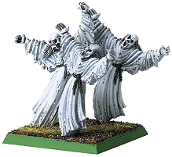
缚灵 (Wraiths)
缚灵是生前曾涉足死灵之术的邪恶之人的灵魂。他们不顾一切的想要自己永生，他们使用魔力保留他们的灵魂。有些人成功的超越死亡，成为了死灵法师，但是大多数人的毅志力不够强大以至于无法维持其物质形态，时光流逝，最后他们衰退直至虚无。至今唯一残留的只有他们的长袍，身体早已腐朽消失。痛恨所有生者但更惧怕死亡，存在与他们的悲惨生命之中，徘徊在生命与死亡之间，这些隐秘的灵魂渴望着凡人的温暖与肉体。
女妖 (Banshee)
女妖是那些邪恶女人死后无法安宁的灵魂。她们的幽影徘徊在物质界，害怕面对将要对她们所犯下邪恶行为的惩罚。女妖之嚎是对那些曾属于他们的快乐生活的痛苦回忆的一种释放。她们的哀号对于凡人和那些没有钢铁般意志却又没有避开的人是致命的。她们枯骨一样的外形扭曲着，还有那永恒的冰冷的，带着极大痛苦和无尽悲痛的面容。棕毛般的残发象黑云一样将她们包围其中。她们漂浮地面之上，生前被她们杀害的男性的幽影环绕在身边，散发着诡异的死亡的光芒。
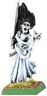
蝙蝠群 (Fell Bats)
每当吸血鬼的大军进入战场时，天空被成群的蝙蝠遮蔽。在吸血鬼的驱使下，这类生物成百上千的向他们的敌人俯冲而下，疯狂的撕咬着他们，以为不死大军的前进争取时间。
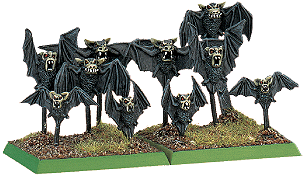
巨蝠(Fell Bats)
又被称为吸血蝙蝠，这些嗜血的Sylvania蝙蝠迅速的繁衍开来，有些展开后足有12英尺长，有的更长。他们是无声、致命而又恐怖的掠食者。它们为血而生，活人的鲜血是他们的最爱。Old World的众多学者都猜测，可能这些野兽的祖先曾喝了吸血鬼的血，现在它们都加入了不死的大军。
黑箱马车（Black Coach）
很久以前，一个强大的吸血鬼被杀死了，但是这并不说明这个世界摆脱了这个黑夜的掠食者。那些最强大的吸血鬼领主都在他们的肉体被摧毁后再次复活，
如果那些强大的吸血鬼的仆人可以收集齐主人的残灰（一旦吸血鬼的生命终结，他们的肉体将负担不起时光的流逝而毁灭成为一堆灰烬），他们将打造一口棺裹来成殓这些余灰。并且通过一种污秽的祭礼创造出一架马车来安放他们主人的遗骸，带着他们去那些杀戮之地。战场和瘟疫肆虐的城市会有一种强大的力量可以让吸血鬼的灵魂得到复苏。
虚无的缚灵驾驶着由两匹恐怖的梦魇所拉动着的幽寐般的幻影马车。据传言即使这些生物被摧毁，黑箱车仍可以在超自然的能量驱动下继续自己的行程。黑箱车是来自死亡国度的另人畏惧的污秽之物，它以凡人的灵魂为食，吸吮着他们的鲜血，屠杀的人类越多他的力量就越强大。
极少有哪些死亡标记能够使人感到恐惧或者鼓舞不死生物。据说一万个凡人的鲜血可以将吸血鬼领主从他的沉睡中唤醒，并再次回到生者的世界之中。
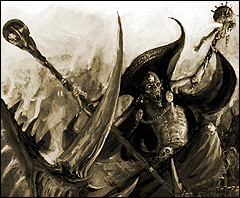